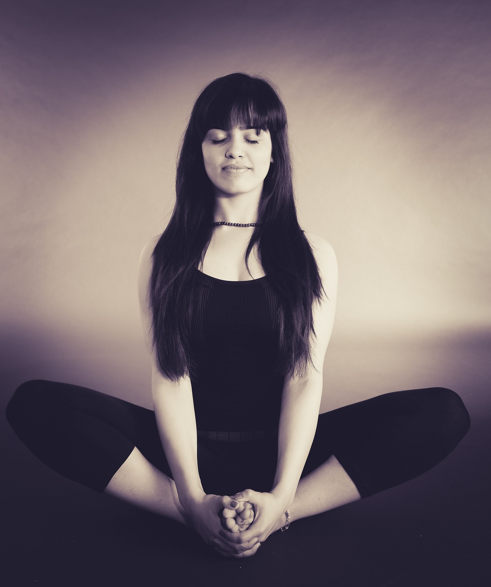

Hurrah! You made it to our site. You're one step closer to destressing yourself. So how much time have you given yourself?
I have...

...five minutes!
Settle into your favourite yoga posture. Haven't discovered your fave pose? Explore your options here.

...twenty minutes!
Go on a walk. Take a look at this article and thank us later :)

...an hour!
Talk to someone. Make sure it's someone you know you trust and whose cares about your happiness.